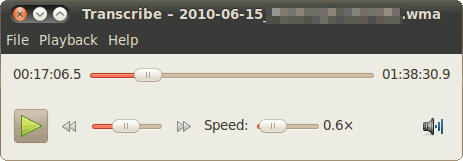

Transcribe
Dieser Artikel wurde für die folgenden Ubuntu-Versionen getestet:
Ubuntu 14.04 Trusty Tahr
Zum Verständnis dieses Artikels sind folgende Seiten hilfreich:
Transcribe  ist ein Audio-Player, der auf die Transkription von Sprachaufzeichnungen zugeschnitten ist. Vom Funktionsumfang ist Transcribe daher bewusst einfach gehalten, bietet aber einige Sonderfunktionen, die das Übersetzen unterstützen.
ist ein Audio-Player, der auf die Transkription von Sprachaufzeichnungen zugeschnitten ist. Vom Funktionsumfang ist Transcribe daher bewusst einfach gehalten, bietet aber einige Sonderfunktionen, die das Übersetzen unterstützen.
Voraussetzungen¶
Transcribe basiert auf dem Multimediaframework GStreamer in der Version 0.10, während Ubuntu inzwischen die Version 1.0 präferiert. Bis einschließlich Ubuntu 15.10 muss daher das folgende Paket installiert sein/werden [1]:
gstreamer0.10-plugins-bad (universe)
 mit apturl
mit apturl
Paketliste zum Kopieren:
sudo apt-get install gstreamer0.10-plugins-bad
sudo aptitude install gstreamer0.10-plugins-bad
Dieses Paket steht ab 16.04 nicht mehr zur Verfügung. Siehe auch Program doesn't launch .
Installation¶
Transcribe ist nicht in den offiziellen Paketquellen verfügbar. Es kann aber über ein "Personal Package Archiv" (PPA) [2] des Entwicklers installiert werden.
PPA¶
Adresszeile zum Hinzufügen des PPAs:
ppa:frederik-elwert/transcribe
Hinweis!
Zusätzliche Fremdquellen können das System gefährden.
Ein PPA unterstützt nicht zwangsläufig alle Ubuntu-Versionen. Weitere Informationen sind der  PPA-Beschreibung des Eigentümers/Teams frederik-elwert zu entnehmen.
PPA-Beschreibung des Eigentümers/Teams frederik-elwert zu entnehmen.
Damit Pakete aus dem PPA genutzt werden können, müssen die Paketquellen neu eingelesen werden.
Nach dem Aktualisieren der Paketquellen kann das folgende Paket installiert werden:
transcribe (ppa)
mit apturl
Paketliste zum Kopieren:
sudo apt-get install transcribe
sudo aptitude install transcribe
Funktionen¶

Transcribe kann eine Vielzahl von Audio-Formaten abspielen. Darüber hinaus bietet es einige Funktionen, die bei der Transkription von Audio-Dateien hilfreich sind:
Die Abspielgeschwindigkeit lässt sich anpassen, die Tonhöhe bleibt dabei unverändert.
Transcribe lässt sich über globale Tastenkombinationen steuern, auch wenn das Fenster im Hintergrund ist. Auch die Steuerung über Fußschalter ist damit möglich.
Beim Unterbrechen der Wiedergabe springt Transcribe ein kleines Stück zurück, um die Transkription nahtlos fortsetzen zu können.
Beim Beenden merkt sich Transcribe die aktuelle Position und Abspielgeschwindigkeit und stellt sie wieder her, sobald die Datei wieder geöffnet wird.
Ein Schieberegler erlaubt genaues Spulen auch bei sehr langen Dateien, bei denen das Spulen über den Fortschrittsregler sehr ungenau ist.
Die aktuelle Position lässt sich kopieren und z.B. als Zeitmarke in das Textdokument einfügen.
Tastatursteuerung¶
GNOME¶
Zur Steuerung über die Tastatur greift Transcribe auf die globalen Einstellungen von GNOME zurück. In der Standardeinstellung nutzt GNOME die Multimedia-Tasten "Wiedergabe (bzw. Wiedergabe/Unterbrechen)" und "Wiedergabe pausieren", über die manche Tastaturen verfügen. Die Tastenkombinationen für die Wiedergabe kann man aber über die GNOME-Einstellungen anpassen. Dazu öffnet man den Einstellungsdialog unter "System -> Einstellungen -> Tastenkombinationen".
Fußschalter, die vom System als Tastatur erkannt werden, können auch auf diesem Wege konfiguriert werden.
KDE¶
Seit Anfang Juli 2011 können die wichtigsten Funktionen in Transcribe mit von GNOME unabhängigen Tastenkombinationen angesprochen werden. Seither ist das Programm auch mit KDE komfortabel zu bedienen. Die Konfiguration beliebiger und global wirksamer Tastenkombinationen funktioniert in KDE folgendermaßen:
In den KDE-Systemeinstellungen wird die Konfiguration für die "Kurzbefehle und Gestensteuerung" angewählt. In der Rubrik "Eigene Kurzbefehle" wird nun mit einem Rechtsklick eine neue Gruppe angelegt (z.B. "Transcribe"). Innerhalb dieser Gruppe kann nun (wieder mit einem Rechtsklick) ein neuer globaler Kurzbefehl angelegt werden: "Neu -> Globaler Kurzbefehl -> Tastatureingabe senden". Als Beispiel sei hier die Funktion "Play/Pause" verwendet.
Es soll beim Drücken der Tasten Alt + die Tastenkombination Strg + an das Fenster von Transcribe gesendet werden.
Auf der rechten Seite kann nun im zweiten Reiter "Auslöser" eine beliebige Taste als global gültiger Auslöser für die Funktion gewählt werden. Als Beispiel sei hier Alt + gewählt.
Nun muss im dritten Reiter "Aktion" im oberen Textfeld die Tastenkombination eingegeben werden, welche dann tatsächlich an Transcribe geschickt werden soll. Diese kann sich natürlich von der vorherigen gloablen Tastenkombination (in diesem Fall Alt + ) unterscheiden. Zu beachten ist, dass in diesem Feld die Tastenkombination als Text beschrieben werden muss! Für Strg + muss dort also die Zeichenfolge "Ctrl+Space" eingegeben werden.
In der zweiten Häflte des Reiters "Aktion" muss der Punkt "spezielles Fenster" angewählt werden. Nun auf die Schaltfläche "Neu..." klicken. Es öffnet sich ein Dialog ("Fensterdaten"), in dem das Transcribe-Fenster als Ziel der zu sendenden Tastenkombination ausgewählt werden kann. Mit einem Klick auf "Automatisch feststellen" und einem anschließenden Klick auf das geöffnete Transcribe-Fenster werden die Parameter des Fensters übernommen. Es empfiehlt sich, die Fensterklasse zum Bestimmen des Fensters zu verwenden, also beispielsweise Fensterklasse enthält "transcribe Transcribe".
Um weiteren Funktionen Tastenkombinationen zuzuweisen, wird nun einfach ein neuer globaler Kurzbefehl in der Gruppe "transcribe" erstellt. Die Tastaturcodes für die Funktionen Vorspulen/Rückspulen lauten Strg + → sowie Strg + ← , für langsamer/schneller Strg + S bzw. Strg + F .
Hinweis:
Wenn eine Taste für die Steuerung von Transcribe verwendet wird, die bereits anderweitig belegt ist, (wie z.B. F5 zum Neuladen von Fenstern), wird die alte Funktion der Taste überschrieben. Es ist also sinnvoll, entweder anderweitig noch nicht verwendete Tasten zu nehmen, oder aber die Gruppe der Transcribe-Tastenkombinationen nach der Verwendung des Programms wieder zu deaktivieren, indem die Checkbox neben der Gruppe abgewählt wird.
Die Einrichtung eines Fußschalters sollte ebenfalls auf diese Weise funktionieren.
Links¶
Transcribe - Diskussion zum Programm im Forum
PlayItSlowly - vergleichbares Programm, das aber für die Musikwiedergabe konzipiert ist
Transkriptionsprogramme
 Übersichtsartikel
Übersichtsartikel
- Erstellt mit Inyoka
-
 2004 – 2017 ubuntuusers.de • Einige Rechte vorbehalten
2004 – 2017 ubuntuusers.de • Einige Rechte vorbehalten
Lizenz • Kontakt • Datenschutz • Impressum • Serverstatus -
Serverhousing gespendet von